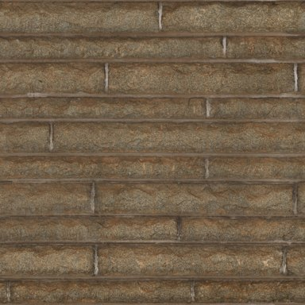

ENDLESS EARTH · MISSION 13D · PR EN BROUILLON
Des matières partagées, un paysage calme
Le jeu conserve la pierre hybride de 13C dans un atlas plus petit. Les grandes silhouettes, la géographie et les dimensions sont préservées. Les gains proches restent subtils ; les grandes vues et les lumières moins flatteuses font partie des preuves.
Ces images viennent du vrai navigateur. Le témoin photographique brut et le PBR Standard sont conservés dans leurs essais historiques ; aucune image IA ou photographie locale ne sert de texture au village.
Rue
46.695591, 0.884239 · 2026-06-21T13:57:47.015Z · équilibré · 960 × 640
Façade proche
46.695548, 0.884300 · 2026-06-21T13:57:47.015Z · équilibré · 960 × 640
Toitures
46.695569, 0.884243 · 2026-06-21T13:57:47.015Z · équilibré · 960 × 640
Chemin
46.696955, 0.881633 · 2026-06-21T13:57:47.015Z · équilibré · 960 × 640
Sol naturel
46.698175, 0.878899 · 2026-06-21T13:57:47.015Z · équilibré · 960 × 640
Falaise partiellement masquée
46.693414, 0.883352 · 2026-06-21T13:57:47.015Z · équilibré · 960 × 640
Berge
46.693099, 0.882435 · 2026-06-21T13:57:47.015Z · équilibré · 960 × 640
Village
46.693908, 0.883090 · 2026-06-21T13:57:47.015Z · équilibré · 960 × 640
Matin
46.695591, 0.884239 · 2026-06-21T05:33:11.000Z · équilibré · 960 × 640
Soir
46.695591, 0.884239 · 2026-06-21T19:27:25.000Z · équilibré · 960 × 640
Soir pluvieux
46.695591, 0.884239 · 2026-06-21T19:27:25.000Z · équilibré · 960 × 640
Nuit
46.695591, 0.884239 · 2026-06-21T23:08:43.400Z · équilibré · 960 × 640
Deux scènes synthétiques, trois apparences
Le granite et l’ardoise illustrent une famille atlantique ; l’enduit, la pierre claire et la tuile une famille méridionale. Les maillages et arbres sont identiques entre contextes, y compris les pentes de toit. Une toiture explicitement en ardoise reste en ardoise dans les trois variantes. Aucune reproduction d’un village réel ni géologie nationale déduite.
atlantic-village · Ensemble
atlantic-village · Architecture
atlantic-village · Matière proche
mediterranean-rock · Ensemble
mediterranean-rock · Architecture
mediterranean-rock · Matière proche
atlantic · autres lumières
mediterranean · autres lumières
Promenades réelles
Même route OSM, déplacement natif de 450 m, vue subjective Éco 640 × 360, juin, après-midi clair. Son post-limiteur, sans téléportation, accélération ou montage ; remux seulement. Les vidéos ont leurs temps propres et incluent le coût de capture logiciel. Le témoin Mission 12 provient de 13C et a connu une brève concurrence de préparation. Promenade 13C avant optimisation.
Mission 12, témoin enregistré en 13C · 450 m · 372.1 s13D, promenade native finale · 450 m · 352.6 s
Coût mesuré
324 rendus avec lecture complète des pixels, Chromium 156 / SwiftShader, 800 × 600. Douze valeurs par combinaison. Médiane / P95 en ms ; appels, triangles et programmes identiques dans chaque triplet. La dernière colonne compare 13D à 13C.
| Profil / vue | Mission 12 | 13C | 13D | Écart / 13C |
|---|
| eco / rue | 360.5 / 407.8 | 401.5 / 448.5 | 385.5 / 415.3 | -4.0 % |
| eco / falaise | 290.3 / 303.6 | 317.0 / 345.1 | 282.4 / 359.0 | -10.9 % |
| eco / village | 271.7 / 298.4 | 297.8 / 344.0 | 328.5 / 371.9 | +10.3 % |
| balanced / rue | 427.2 / 473.3 | 516.1 / 566.4 | 437.3 / 495.6 | -15.3 % |
| balanced / falaise | 365.1 / 406.9 | 420.9 / 462.7 | 368.9 / 396.2 | -12.4 % |
| balanced / village | 373.7 / 397.3 | 398.9 / 485.9 | 416.9 / 443.6 | +4.5 % |
| quality / rue | 475.2 / 546.1 | 512.9 / 574.5 | 471.3 / 540.7 | -8.1 % |
| quality / falaise | 349.9 / 408.5 | 399.6 / 422.9 | 370.4 / 424.6 | -7.3 % |
| quality / village | 361.2 / 404.9 | 341.8 / 399.9 | 388.2 / 466.7 | +13.6 % |
Aucun FPS de GPU physique ni d’Android revendiqué. Le nouveau pack Poitou pèse 173 289 octets et environ 0,32 Mio de texels avec mipmaps, contre 1 578 189 octets et 5,06 Mio en 13C. Deux contextes au plus restent en cache ; le PNG d’un autre contexte est chargé à la demande. Les timings de démarrage locaux sont des observations uniques, sans simulation de réseau mobile.
Références et choix écartés
 Photo locale C18, Bachelier Jacky, Commons, CC BY-SA 4.0. JPEG documentaire réduit en 13A, sans nouveau traitement.
Photo locale C18, Bachelier Jacky, Commons, CC BY-SA 4.0. JPEG documentaire réduit en 13A, sans nouveau traitement. Diagnostic photographique 13C, éclairage Lambert : dominante brune et contraste trop forts pour le paysage. Variante non retenue.
Diagnostic photographique 13C, éclairage Lambert : dominante brune et contraste trop forts pour le paysage. Variante non retenue.
Granite Wall, Dimitrios Savva, Poly Haven, CC0. Aperçu de la source réellement examinée, utilisé seulement comme grain régional harmonisé dans la scène synthétique.La photo du village permet une comparaison approximative des joints, patines et familles de matières ; aucun recalage géométrique ou photométrique. Le granite ne prouve aucune géologie locale. Provenance, droits, dimensions et empreintes du granite · Comparaison PBR Standard / procédural / hybride de 13B · Toutes les références 13A.
Essayer et juger
Rapport complet · Procédure locale · Mesures et conditions · Préservation · Auteurs CC0. Les captures du moteur conservent leurs crédits IGN/ASP/OSM.
Le MNT à 10 m, la falaise masquée, les hauteurs estimées et les inconnues restent tels quels. Le grain à 128 pixels est plus doux de très près ; la texture ne corrige pas la géométrie. Deux scènes synthétiques ne valident pas la France entière. Le prototype affiche un contexte régional à la fois ; une frontière entre contextes simultanément visibles n’est pas démontrée.
Arrêt après 13D pour validation artistique finale. PR en brouillon, aucune fusion ni publication.